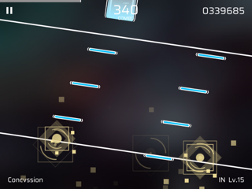
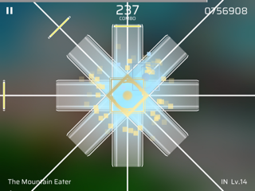
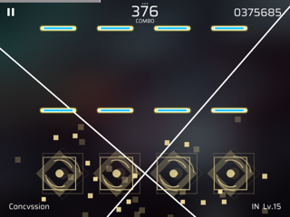

目次
多判定ラインの落下式リズムゲームです。
中国の動画共有サービス、bilibili動画発のプロジェクト
「Pigeon Games」によって開発されました。
スマートフォン及びタブレット端末で遊べます。
IOS最新ver.: 2.4.3
Tap Tap最新ver.: 2.4.3
Google Play最新ver.: 2.4.0 (現在DL不可)
| 楽曲数 | 162曲 |
|---|---|
| 価格 | 無料 |
| 難易度 | 一つの楽曲につき4つの難易度 EZ(Easy)・HD(Hard)・IN(Insane)・AT(Another) から選べます |
| 楽曲解禁 | 基本的に一つ前の楽曲でランクA以上を獲得することで解禁されます。 |
| ストーリー | 曲をクリアすると物語が読めます。 イレギュラーな曲の解禁方法のヒントが書いてある場合もあります。 |
初期に実装された曲達
曲をプレイして貯まるポイントを使って手に入れる楽曲
提供曲、コラボ楽曲集
Phigrosには4種類のノーツが存在し、種類によって叩き方も異なります。
全てのノーツは判定ラインの垂直上であればどこでも反応します。
白の線に重なるタイミングで押す !
他のリズムゲームと違い、判定ラインは
上下左右に動く・回転する・増える・無くなる(!?)ことがあります。
ラインが荒ぶっても落ち着いて対処しましょう。
さらに、ノーツも途中で消えたり、上下左右から降ってきたりと予想外の動きをしてきます！

判定ラインが増殖！どちらもタップ

八方すべてをホールドせよ

判定ラインが水平で停止しているとは限らない
「996」
演出がこれでもかと仕込まれた譜面。
996は、「9時入社、21時退社、週6勤務」の意。
降り積もる大量の書類（ノーツ）を必死で処理していく。
「もぺもぺ」
「検索してはいけない言葉」としても有名なトラウマ曲が音ゲーになって登場。
曲調の変化と同時に譜面も狂い始める。ぜひATをプレイしてほしい。
「GOODRAGE」
速度✕物量 の暴力。GOODシリーズ最難関。
BPM222で上下左右からノーツが襲い掛かる。己の情熱-RAGE-で喰らいつけ！